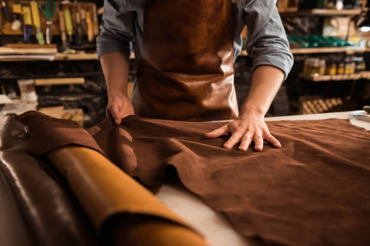
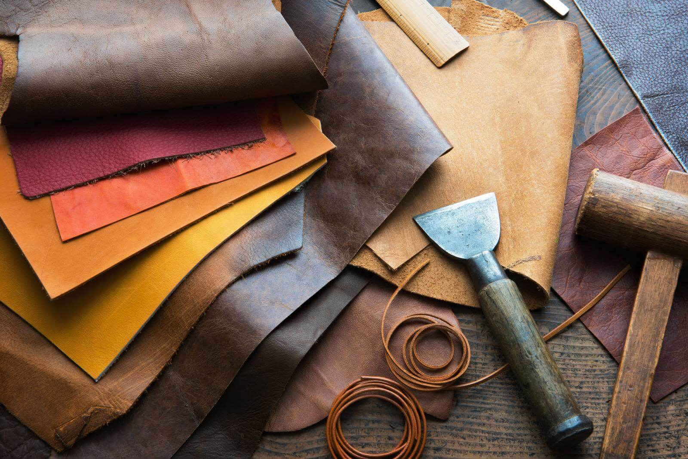

¿Cómo nace nuestra pasión por el cuero? ...nace como un hobby en 2020 a raiz de no poder salir de casa, espazamos a trabajar con este noble material y nos dimos cuenta, casi sin querer, que nos encantaría poder vivir de vender nuestros productos a los que tanto amor y tiempo le dedicabamos.

¿Nuestro objetivo? Hacer productos que no tengas que cambiar una vez por año y que sean amigables para el medio ambiente. Queremos que nuestros artículos, además de estéticos, sean duraderos, por eso usamos cueros curtidos con taninos vegetales.

¿Por qué furnarius? Además de ser el ave nacional, sus nidos simbolizan nuestros objetivos. Queremos que nuestras obras sean resistentes como las suyas.